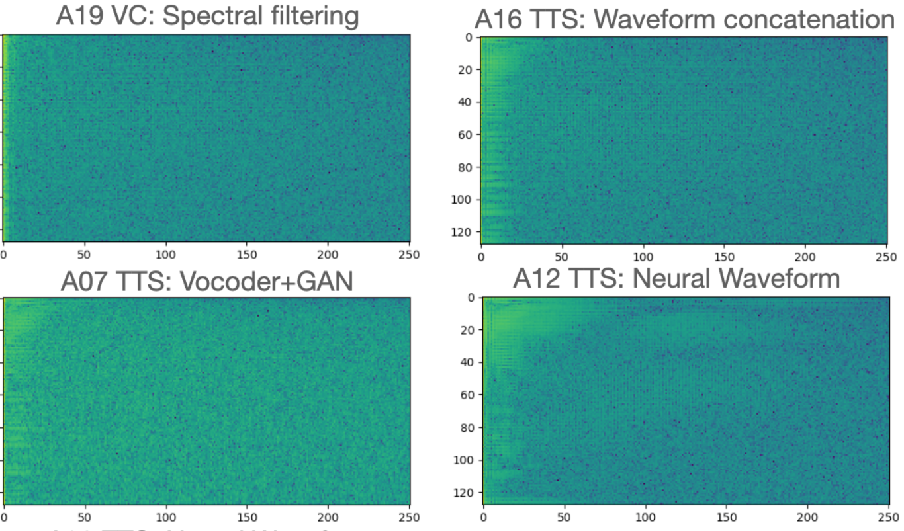
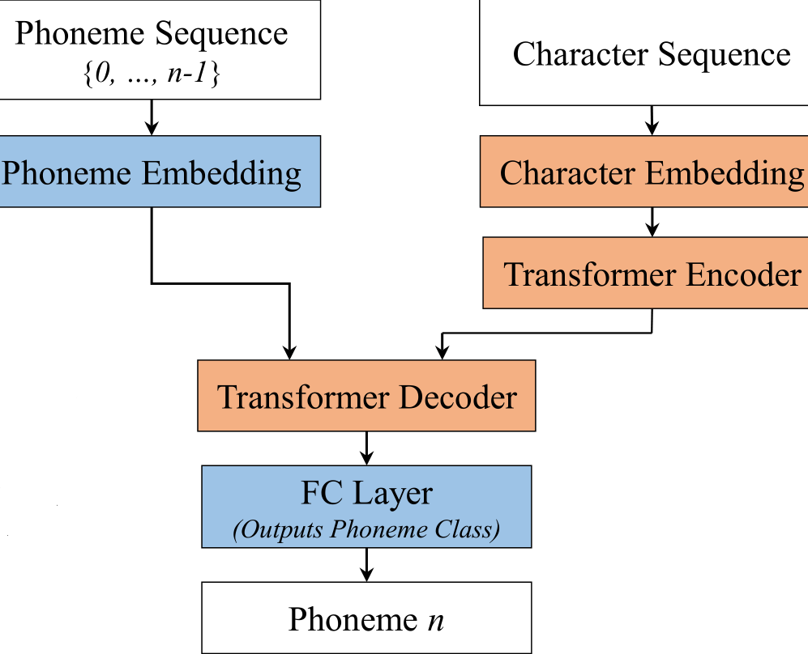
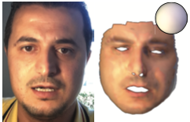
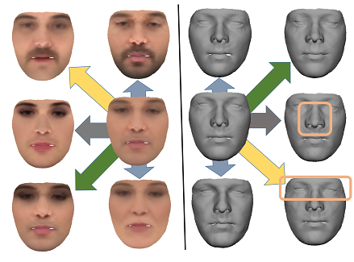
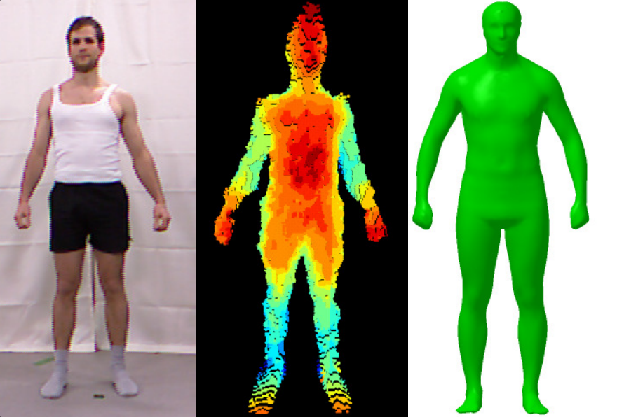
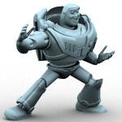
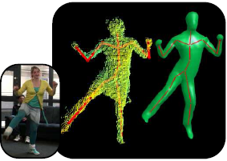
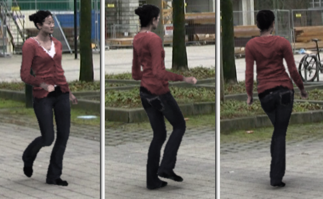

Gaurav Bharaj
I am Director of Research at AI Foundation, where I lead the generative science research to create virtual humans. I did my Ph.D. in Computer Science from Harvard University under the supervision of Hanspeter Pfister and Masters from University of Pennsylvania. Previously, I worked as a researcher at Technicolor R&I and at Max-Planck Institute of Informatics, where my advisor was Christian Theobalt. I spent summer working at MIT, Disney Research, Adobe Research, and Intel.
How to join: I am looking for strong profiles with interest in Computer Vision, Audio Synthesis, Natural Language Generation, and Deep Learning. If interested apply: here.
Email / Google Scholar / LinkedIn
Selected papers
|  |
Generalized Spoofing Detection Inspired from Audio Generation Artifacts
Yang Gao, Tyler Vuong, Mahsa Elyasi, Gaurav Bharaj, Rita Singh InterSpeech, 2021 |

|
Generative Landmarks
David Ferman, Gaurav Bharaj Eurographics (Computer Graphics Forum) Poster, 2021 |

|
Practical Face Reconstruction via Differentiable Ray Tracing
Abdallah Dib, Gaurav Bharaj, Junghyun Ahn, Cedric Thebault, Philippe-Henri Gosselin, Marco Romeo, Louis Chevallier Eurographics (Computer Graphics Forum), 2021 |

|
Flavored Tacotron: Conditional Learning for Prosodic-linguistic Features
Mahsa Elyasi, Gaurav Bharaj 2021 |
|  |
Grapheme-to-Phoneme Transformer Model for Transfer Learning Dialects
Eric Engelhart, Mahsa Elyasi, Gaurav Bharaj 2021 |

|
Deep Digital Humans
Gaurav Bharaj NVIDIA Inception, 2020 |

|
StyleRig: Rigging StyleGAN for 3D Control over Portrait Images
Ayush Tewari, Mohamed Elgharib, Gaurav Bharaj, Florian Bernard, Hans-Peter Seidel, Patrick Pérez, Michael Zollhöfer, Christian Theobalt Computer Vision and Pattern Recognition (CVPR), 2020 (Oral) |

|
Identification of Neural-Network-Generated Fake Images
Matthias Niessner, Gaurav Bharaj US20200160502A1, 2020 |
|  |
Face Reflectance and Geometry Modeling via Differentiable Ray Tracing
Abdallah Dib, Gaurav Bharaj, Junghyun Ahn, Cedric Thebault, Philippe-Henri Gosselin, Louis Chevallier Conference on Visual Media Production (CVMP), 2019 |
|  |
FML: Face Model Learning from Videos
Ayush Tewari, Florian Bernard, Pablo Garrido, Gaurav Bharaj, Mohamed Elgharib, Hans-Peter Seidel, Patrick Pérez, Michael Zollhöfer, Christian Theobalt Computer Vision and Pattern Recognition (CVPR), 2019 (Oral) |

|
Metamorphs: Bistable Planar Structures
Gaurav Bharaj, Danny Kaufman, Etienne Vouga, Hanspeter Pfister Technical Report, 2018 |

|
Methods in Computational Design and Optimization
Gaurav Bharaj Ph.D. Thesis, 2017 |

|
Walking Machines
Bernd Bickel, Gaurav Bharaj, Bernhard Thomaszewski, Stelian Coros US20160059140A1, 2016 |

|
Computational Design of Metallophone Contact Sounds
Gaurav Bharaj, David Levin, James Tompkin, Yun Fei, Hanspeter Pfister, Wojciech Matusik & Changxi Zheng ACM Transactions on Graphics (SIGGRAPH Asia 2015), 34(6) |

|
Computational Design of Walking Automata
Gaurav Bharaj, Stelian Coros, Bernhard Thomaszewski, James Tompkin, Bernd Bickel & Hanspeter Pfister ACM SIGGRAPH / Eurographics Symposium on Computer Animation (SCA 2015) |
|  |
Personalization and Evaluation of a
Real-time Depth-based Full Body Tracker
Thomas Helten, Andreas Baak, Gaurav Bharaj, Meinard Müller, Hans-Peter Seidel & Christian Theobalt 3D Vision (3DV 2013) |
|  |
Automatically Rigging Multi-component Characters Gaurav Bharaj, Thorsten Thormählen, Hans-Peter Seidel & Christian Theobalt European Association for Computer Graphics (Eurographics 2012) |
|  |
A Data-Driven Approach for Real-Time Full Body Pose
Reconstruction from a Depth Camera Andreas Baak, Meinard Müller, Gaurav Bharaj, Hans-Peter Seidel & Christian Theobalt IEEE International Conference on Computer Vision (ICCV 2011) |
|  |
Video-based Characters - Creating New Human Performances
from a Multi-view Video Database Feng Xu, Yebin Liu, Carsten Stoll, James Tompkin, Gaurav Bharaj, Qionghai Dai, Hans-Peter Seidel, Jan Kautz & Christian Theobalt ACM Transactions on Graphics (SIGGRAPH 2011) |